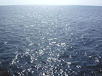

Some Sea Views
I'm not a sailor, and hasn't seen wide sea, but these views are attractive, too. Most of my "sea photos" are taken underwater, when I swim with mask.


Red Sea is a sea;
only it is clear

For ships corals
are dangerous reefs